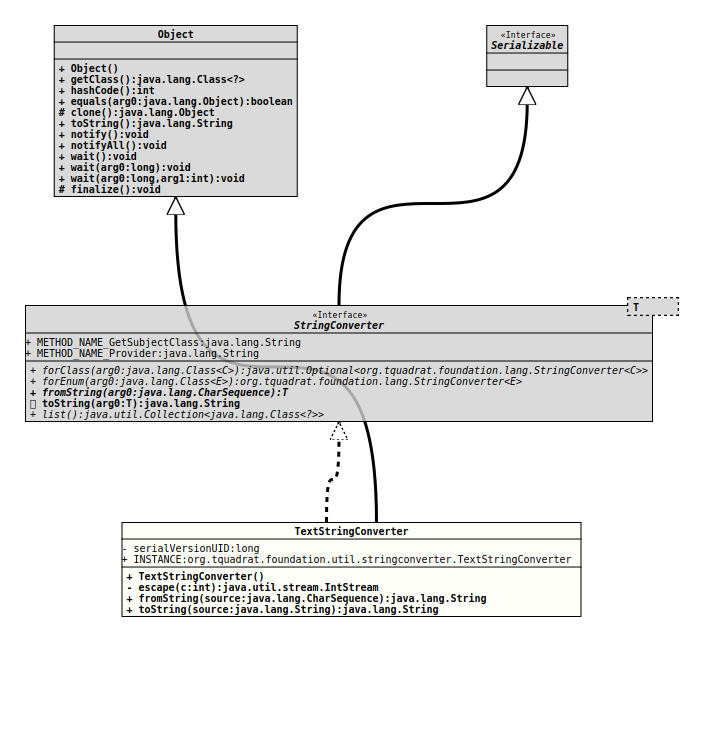

Module org.tquadrat.foundation.util
Class TextStringConverter
java.lang.Object
org.tquadrat.foundation.util.stringconverter.TextStringConverter
- All Implemented Interfaces:
Serializable,org.tquadrat.foundation.lang.StringConverter<String>
@ClassVersion(sourceVersion="$Id: TextStringConverter.java 934 2021-12-06 15:19:40Z tquadrat $")
@API(status=STABLE,
since="0.1.0")
public final class TextStringConverter
extends Object
implements org.tquadrat.foundation.lang.StringConverter<String>
An implementation of
StringConverter
for text values.
Although technically, a text is a String and therefore a conversion to
String would be redundant (at best), semantically there is difference, and
this implementation of StringConverter takes care of that.
Other than for the conversions performed by
StringStringConverter,
the results are not identical with the input values: a text may contain
several special characters, like new lines, tabs, backspaces or form feeds.
These will be translated by the
toString(String)
method into escape sequences,
while
fromString(CharSequence)
will translate the escape sequences back to the special characters,
according to the table below.
| Name | Code | Escape | Comment |
|---|---|---|---|
| backspace | U+0008 | \b | |
| horizontal tab | U+0009 | \t | |
| line feed | U+000A | \n | The UNIX line termination, also used in Java internally as the new-line character |
| form feed | U+000C | \f | Rarely used |
| carriage return | U+000D | \r | The Windows line termination is CRLF or \r\n |
| space | U+0020 | \s | A space or blank will be escaped only if it is the very first or the last character of a text |
- Author:
- Thomas Thrien (thomas.thrien@tquadrat.org)
- Version:
- $Id: TextStringConverter.java 934 2021-12-06 15:19:40Z tquadrat $
- Since:
- 0.1.0
- See Also:
- UML Diagram
-

UML Diagram for "org.tquadrat.foundation.util.stringconverter.TextStringConverter"
{kind=link}
-
Field Summary
FieldsFields inherited from interface org.tquadrat.foundation.lang.StringConverter
METHOD_NAME_GetSubjectClass, METHOD_NAME_Provider -
Constructor Summary
Constructors -
Method Summary
Modifier and TypeMethodDescriptionprivate final IntStreamescape(int c) Returns the escape sequence for the given special character, or the character itself if it does not need an escape.final StringfromString(CharSequence source) final String
-
Field Details
-
INSTANCE
An instance of this class.
-
-
Constructor Details
-
TextStringConverter
public TextStringConverter()
-
-
Method Details
-
escape
Returns the escape sequence for the given special character, or the character itself if it does not need an escape.- Parameters:
c- The character.- Returns:
- The escape sequence.
-
fromString
- Specified by:
fromStringin interfaceorg.tquadrat.foundation.lang.StringConverter<String>- Throws:
IllegalArgumentException
-
toString
- Specified by:
toStringin interfaceorg.tquadrat.foundation.lang.StringConverter<String>
-